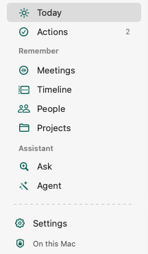
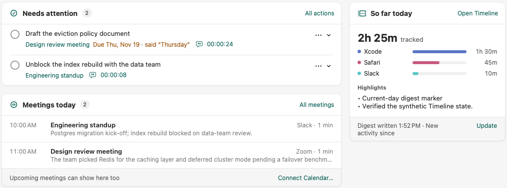
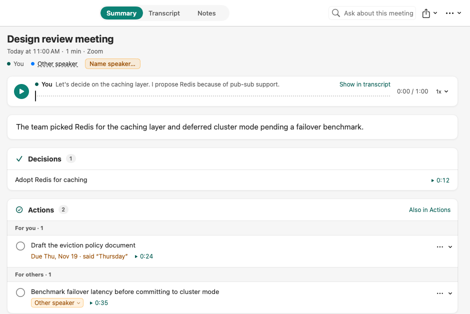
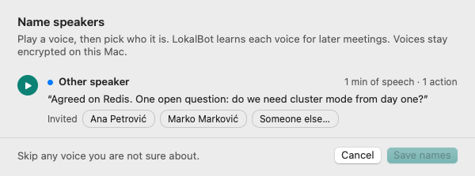
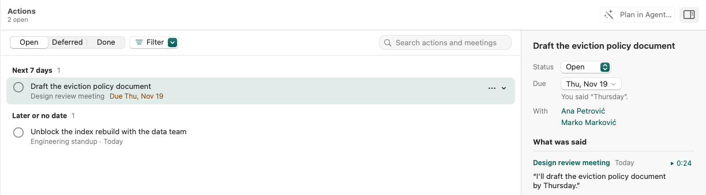
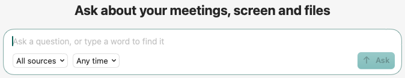
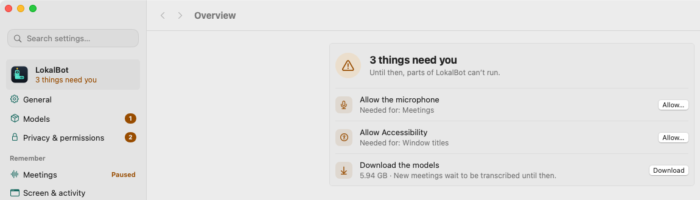
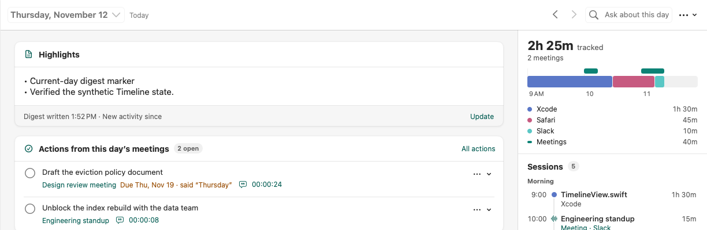

Each screen shows a thing once and leads with what you came for.

1 2 3
4
5 6 7 8
One sheet names every voice you haven't named yet.

Actions: Open, Deferred, Done and one Filter menu, overdue first, details beside the list. ⌘-click picks several.

Ask: one field. Return asks; ↓ then Return opens a match. ⌘K opens Quick Recall: search, commands and Ask in one window.

Settings (⌘,): Overview lists what needs you; Privacy & permissions is the one home for permissions.

Timeline: the day page and the Sessions rail. New since this capture: drag the rail's edge to widen it.
Mac only; the Windows and Linux app keeps its own layout. The menu bar panel and People were checked only as renders, and the new wording in 24 languages is machine-translated, not yet reviewed by native speakers.